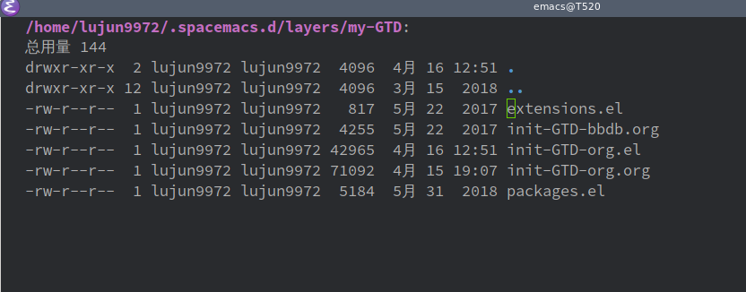
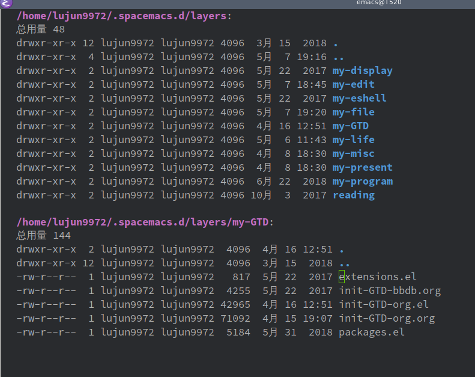
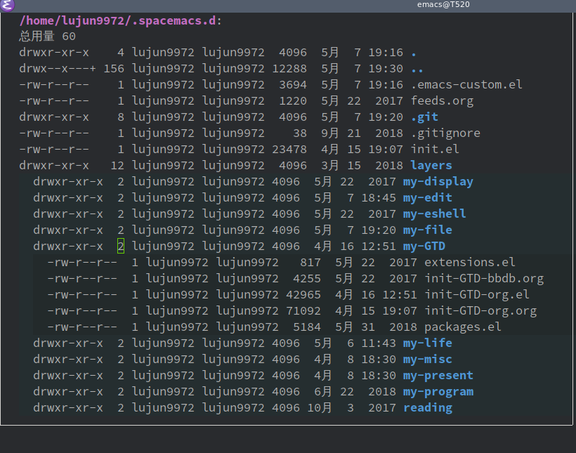

dired-subtree让你的dired更直观
dired 是Emacs自带的一款文件管理工具，在 dired 中进入子目录我们要么直接在子目录上按下回车,这会打开一个新buffer显示子目录的内容

要么按 i 将子目录插到当前buffer的下面

但是这个操作跟我们常见的文件管理器中的树形结构很不一致，对初用的人来说会很不习惯。
今天发现了一个很棒的插件可以解决这个问题: dired-subtree. 你可以从 melpa 上安装它。 具体安装步骤就不说了.
这个插件提供了很多interactive命令，但是最有用的就一个命令: dired-subtree-cycle,它可以让Dired像其他文件管理器一样用树形结构来展示目录结构，像这样:

我自己是习惯把这个命令绑定在 TAB 键上
(use-package dired-subtree :defer t :bind (:map dired-mode-map ("TAB" . dired-subtree-cycle)))